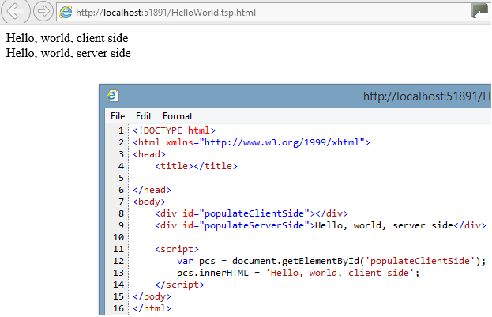

Many recent innovations in the area of web development have centered around client-side frameworks based on JavaScript, such as JQuery based frameworks, or more recently, directive based frameworks such as AngularJS or Knockout. These frameworks have largely shunted the benefits which could derive from synergies with server-side processing. Part of this trend towards pure client-side frameworks may be motivated by a desire to avoid committing to a single server-side platform, such as .net, Python, Java, etc. Another motivation is it becomes more difficult to maintain if developers need to work with two very different languages, and the question "where is this content coming from?" is hard to answer.
These client-centric frameworks generate the dynamic content (or even all the content) on the client using JavaScript. The role of the server has, in many cases, been reduced to providing dumb static file server capabilities, in conjunction with providing live JSON data feeds and a Restful API for storing changes. As a result these frameworks have often left behind the concept of progressive enhancement , rendering the page useless in the extreme example of a browser (or search engine) not having JavaScript enabled.
This white paper addresses these shortcomings, and takes some cues from the HTML5 standards, and from the innovations of solutions like node.js, to provide a strategy to achieve the high performance of a rich, AJAX-based client application, while staying true to the directive-based, W3C compliant approach of html. The strategy takes the form of a specification, which is open for anyone to implement using any platform.
The "Dual Browser Specification" (DBS) is a set of HTML attributes, which provide a light-weight synergy between the server and a JavaScript-centric web application, for building web pages -- a minimally intrusive set of attributes to integrate with the server in a seamless manner. DBS is similar in concept to other server-side markup, like ASP.net based web forms, JSP, or PHP. But those platforms use proprietary tags and scripting languages, different from what is supported on the client-side, namely JavaScript. In contrast DBS content is built using files containing fully HTML5-compliant markup as a base, and modified dynamically using JavaScript, combined with data in JSON or other formats. Furthermore, with DBS, the same JavaScript code can usually execute on the server and/or the client, and produce identical results. The design of the DBS is completely directive-based, like HTML itself, and just as multiple browsers can be built to support the HTML standard, server-side implementations of DBS can easily be built in multiple platforms. The fact that DBS sticks to HTML-compliant tags also means the selection of helpful editors and editor support for the features is much wider.
Typed Server Pages (TSP, or "teaspoon") is the first implementation of the DBS (work in progress). TSP is implemented as an ASP.net http handler. TSP also extends DBS with more specific solutions to solve common problems. These extensions are largely encapsulated in a JavaScript library. The JavaScript of the supporting TSP implementation is compiled from Typescript (hence the "Typed" in the name), and applications built using the TypeScript compiler / IDE tools could benefit from the added type safety when integrating with the API. But custom application logic may be written directly in JavaScript if preferred (or other languages which compile to JavaScript). The TypeScript/JavaScript libraries which come with TSP can also be leveraged in other, alternative DBS implementations, built leveraging the Java, Python, or node.JS platforms, for example.
While JavaScript becomes a primary vehicle for delivering content both on the client and on the server in a DBS-based application, there are a few islands of functionality where an arguably more mature / robust language (from a server point of view) can be used - for example, in generating the data model.
Standard JavaScript tags (<script>...</script>) will by default continue to execute on the DOM in the client browser. As such, we would expect it to execute the same regardless of the web server (but results may vary, unfortunately, based on different browser capabilities / quirks). However, JavaScript tags in the html markup adorned with the custom attribute data-mode:
<script data-mode='server-side-only'>...</script>
will, in an environment which supports the DBS, execute the JavaScript contained within the tag on the server. The JavaScript which executes on the server will, like on the client, have access to a server-side representation of DOM, as the script will be executed in an environment where the base html has been parsed in a "virtual browser". It will be a more limited representation, in that it will not have access to BOM objects which only make sense in a true client-side browser environment. In a host environment where the custom attribute tags are not recognized by the server-side processor, such as a plain vanilla Apache web server, or a local file server, it would continue to execute on the client, and will likely continue to succeed. The reasons applications may benefit from the ability to execute some or all of the JavaScript on the server side could include:
The manipulations done by the server on the DOM document will be reflected in the html markup streamed down the client.
The ease with which a developer can finesse in which tier (server vs. client) dynamic logic gets applied has a number of benefits for developer productivity. With a few minor adjustments, one can turn a high fidelity prototype -- running on a simple out-of-the-box web server, or even a local file server, where all the logic executes in a browser of the developer's choosing, using static data -- into a fully functioning production application with real business data, targeting a large assortment of devices. In fact, the migration can be so seamless and non intrusive that development could continue between UI design specialists and nitty gritty "engineering" programmers in parallel. Supporting this kind of development pattern is an important guiding principle for this specification.
As we've seen, a central custom attribute is introduced in DBS: data-mode, which can be set, for example, to 'server-side-only'. This attribute is applicable to <script/>, <iframe/>, <form/>. The following table lists all the possible values, the meaning, and the default value if the attribute is not specified:
| Tag Name | Possible Values / Meaning | Default Value if not specified | Notes | ||||||||
| script |
|
client-side-only (except in case of Model script tags) | Some subtleties arise in the case of Model script tags. | ||||||||
| iframe |
|
client-side-only | |||||||||
| form |
|
server-side-only |
The DBS emphasizes solutions which can work in all sorts of devices, including ones which do not support JavaScript. Relying too heavily, then, on a client-side data model, which binds to the UI via JavaScript, could detract from that goal. Nevertheless, the specification does facilitate the use of a model on the server-side, and there are many scenarios where a client-side model can enhance the user experience, such as for client-side paging, without rendering the page useless for simpler devices. Thus, the DBS does provide a way to embed dynamic objects, as a branch in the global 'model' object, as shown below:
We shall refer to script tags with the data-model attribute as "script model" tags. The JavaScript code inside these script model tags will be discarded on the server side during run time in the context of a functioning DBS container. The dummy data is there for two purposes -- first, it allows prototyping in a simple file server environment to provide a rudimentary representation of how it will look with actual data. Secondly, if the developer tests out some JavaScript by directly embedding it in the page, then references to the model will benefit from intellisense, and basic inconsistency checks, at least in sophisticated enough IDE's. There is a small performance hit from including dummy data inside the script tag - the server will spend slightly more time parsing the HTML file, longer if the dummy data is extraordinarily large.
The key new attribute here is the data-model attribute. The id attribute is also required, because this will determine the branch name of the global model object to attach the results to. Constructing the model (or "view model") data structure is one place in the application logic where we can utlize platforms other than a JavaScript runtime, if we wish. The data-model attribute specifies a static method in a static class, with no parameters. This method may be developed in one of two language runtimes: i) JavaScript, or ii) in whatever specific platform the implementation of the DBS framework is running. This string identifier for a server-side method will be referred to, throughout this document, as the "server-side method string". The example above wraps the class identifier in brackets, which signifies to look for a class in a .net assembly (for the .net based implementation of TSP, for example). No brackets would indicate to use a JavaScript call, where the JavaScript method is either embedded in the page, or exists in a referenced JS file. Even if JavaScript is chosen, it will be invoked on the server side, regardless of the data-mode attribute. The DBS container should provide a means for this static method to have access to a platform specific http context from which it can read any query string parameters, cookies, etc. for that request, as well as the tag from which the call was made (which may contain important data in the attributes).
By default, there will be a significant difference between what the model looks like on the server vs. the client. On the server side, it will be a "live" native object, complete with method calls which may access system resources or make database connections to sensitive systems. The server-side JavaScript will be able to script against this object, as long as the object methods have simple enough parameter signatures. Before the object gets to the client (if data-mode requires it to), it is serialized to JSON, leaving behind no methods for the client to interact with. Thus it would be quite easy to write code which works when executing on the server-side, but fails on the client-side, and vice versa. This is a significant issue, but it is pragmatic to live with this compared with at least one alternative -- "dumbing down" the server object, forcing the object to serialize to JSON and stripping all methods right away, even on the server, would tie the hands of the developer, and impose a significant performance penalty, all to fanatically adhere to perfect symmetry between the client and the server. Nevertheless, for some application types, or data elements, it may be quite beneficial to support customizations to this default behavior, and achieve more consistency between the client and server. DBS implementors may optionally provide some experimental attributes to achieve this consistency. These options are discussed later.
Like other script tags, the ones which contain the data-model attribute also support the data-mode attribute, but its meaning is a bit different here. Regardless of the value of data-mode, the data model will be generated by the server, and will wipe away the content inside the script tag. The only questions are whether 1) the JSON-serialized data model needs to be downloaded to the client and 2) if so, whether the download should be part of the payload of the original page, or instead should be downloaded separately from the page via a call-back ajax call. This is sorted out as follows:
When data is retrieved asynchronously on the client, it will be up to the developer to ensure that any elements of the page which depend on this data, should get (re)evaluated following the retrieval of the data. Making this easier for the developer is an area specific implementations of the DBS may add value. The TSP framework implementation provides support for some such scenarios.
A special, reserved model can be added to the page, as follows:
This special model will be provided by the DBS container, and it will generate a JSON representation of the basic request object (query string parameters, cookies, etc) in the following form:[TODO] Just as with standard model script tags, this special http context model can contain sample mockup inside the script for intellisense / prototyping purposes, and additionally the data-mode attribute will follow the same standard rules for script model tags, and the data-csFilter will also be honored as before. Other objects often associated with a web session, such as session objects or application cache, need to be exposed to the browser via custom model tags.
Central to the DBS is the concept of a "virtual browser" running in the server. This concept is a simple extension of the idea behind node.js and other server-side solutions which provide a wrapper around the Google Chrome V8 engine. But while those solutions can execute JavaScript, they do not emulate other critical aspects of what happens in a browser, starting with a DOM parser which can read a HTML compliant document, and query and manipulate the document using calls such as document.getElementById, or document.querySelectorAll, or node.appendChild. The following table provides a "shopping list" of functionality needed to implement a virtual browser with enough features to support the DBS.
| Virtual Browser Shopping List | |
|---|---|
| Functionality | Explanation |
| JavaScript Engine | Ideally should have optimal performance, and be compatible with the JavaScript engine availalbe in modern browsers, so that the same code can work both on the server as well as the client. Needs to support passing to the JavaScript engine native objects, and for the JavaScript to be able make method calls on these native objects. |
| HTML Parser to DOM Tree | Generally needs to be a bit more sophisticated than a simple xml parser, because HTML has always had more nuances than xml - it needs to support tags with no closing tag, such as the br tag, for example. Ideally, it would be as tolerant of malformed html as the major browsers are (and interpret such non compliance in a similar way) |
| DOM API (HTML 4) | The DOM tree needs to support the equivalent of many of the DOM methods available to HTML 4 browsers, including document.getElementById, document.getElementsByTagName, node.removeChild, etc. However, the method names may be called something different, in which case a Facade, mentioned below, is required. |
| DOM API (HTML 5) | The DOM tree needs to support newer methods including document.querySelectorAll. Again, the names may not match the JavaScript DOM Api specification exactly, in which case a Facade is needed. |
| DOM API Facade (JavaScript syntax) | Some DOM Parsers / Tree libraries may support the heavy-lifting functionality needed for the DOM API which JavaScript needs, but the method names may not perfectly match what JavaScript expects in the context of a browser. For example, getElementById might be called GetElementByID. A layer on top of the native api may then need to be built to provide seemless integration with JavaScript. |
| JQuery Facade (optional) | Being that a significant portion of modern JavaScript manipulation of DOM is done with JQuery, ideally, a significant subset of the JQuery api should work when manipulating the DOM Tree. |
As an example of how one could implement a virtual browser, the TSP implementation of the DBS mixes the following components to achieve the virtual browser. Aternative options are mentioned also (but they've not been explored enough to know if they would be sufficient).
| Functionality | Library | Alternatives |
|---|---|---|
| JavaScript Engine | ClearScript | |
| HTML Parser to DOM Tree | Html Agility Pack | |
| DOM API (HTML 4) | Html Agility Pack | |
| DOM API (HTML 5) | Fizzler | |
| DOM API Facade (JavaScript syntax) | tspHandler.HtmlDocumentFacade | |
| JQuery Facade | tspHandler.JQueryFacade |
While this dual browser model can allow for much code reuse between the client and server (or code shifting as the needs warrant), we hasten to caution that there are some significant areas of functionality where maintaining an exact replica between the server-side browser, and the client-side browser, is not easy or natural to achieve:
Because some aspects of JavaScript make no sense in the context of a server-side virtual browser, such as event handling in raw html or animations using JQuery, only a subset of the common JavaScript api's are required to be a compliant DBS container. [TODO: List the required API]
Example 1: Hello world
Let us now look at the simplest example which demonstrates the dual browser markup in action:
Consider the following markup:
As expected, the page displays two hello statements, but if processed by a DBS container such as TSP, viewing the generated html shows quite a significant difference in how the statements are generated:

Note that the script with attribute data-mode='server-side-only' has been removed from the output sent to the client (since it is not needed on the client), and has already executed on the server, so that the div with id populateServerSide is already populated on the server.
This same page, if served by a host which does not understand the DBS markup, would render the same exact display in the browser, but now the markup sent to the client would be identical between the client-side and server-side tags. It is an important design-goal for DBS that, as much as possible, the user not see a difference whether the same script is executed on the server vs. the client. But the observant reader may have spotted that in fact this example would actually fail the test -- in standard browers, the markup as specified would fail, because the script tag in the head is searching for a DOM element that does not yet exist. The virtual browser implemented by TSP does not have this limitation. In this case the entire DOM is first first loaded prior to the execution of the JavaScript. It is debatable whether this difference in behavior should be tolerated. At any rate, the safe thing to do is to place the JavaScript in a location so it will work im all environments. (TODO: JQuery's ready function)
In many cases we will want to expose common functions both to the server as well as the client. For example, we may have a function that populates a grid, and we may choose to populate the first page on the server side, but populate subsequent pages on the client side based on a cached data model. That is what the attribute value both for data-mode is there for. But sometimes this common code will need to do slightly diffferent things depending on whether the code is executing on the server or on the client. To determine in what mode the code is running, make use of the DBS reserved global variable mode:
The simple "Hello, world" example above used inline JavaScript to make the example simple, but any JavaScript which references external files will behave the same way. All external scripts will be merged into the DOM before processing the scripts.
Most server-side template engines, such as PHP or ASP.net webforms, support some notion of server-side includes, where content from one file can be shared or embedded inside multiple other pages. This is certainly the case with the DBS, but one could argue the solution, consistent with the server-side script tag, is more elegant. Since on the client-side, the tag most often used to embed content from one page into another is the iframe tag, it is natural to extend the same tag to the server side:
One nice benefit of reusing the iframe tag for server-side includes, is that some HTML Editors provide excellent support for iframes -- in particular previewing the content, and being able to easily navigate to the source page of the iframe to edit it via a right-click menu option..
The page being referenced should consist of a fully-formed html document -- like the script tag mentioned above, we should be able to switch the attribute between client-side-only (regular iframe) and server-side-only -- and get almost identical results from the end user point of view. Thus the page should, as a matter of best practice, work as a standalone page. In general, the advantages of using client-side iframes is that it provides a simple way to allow portions of the page to process and load in parallel with other parts. One disadvantage, though, is iframing (on the client) can impose a heavy toll on browser resources, such as memory, particularly when heavy-duty JavaScript libraries are utilized. Ideally, then, we should be able to pick the optimal tier where to embed, which may depend on the type of device accessing the content, and the nature of the content. Hence, like the script tag, the value of data-mode can be "depends", and some custom logic can be referenced which makes the decision, tailored to the user and the content.
Notice the hash tag value in the data-selector attribute. This is expected to specify a unique id found in the referenced document. The DBS container will, on the server, remove all content outside the tag matching the id (with some important exceptions mentioned below), and will add the document fragment to the containing DOM document.
In the case of server-side iframes, the DBS document will also merge all script and css references found in the referenced page. It will look for client-side identical refrences to js files or css files, and not duplicate them in the event it finds a matching reference.
Prior to embedding the content of the page the iframe tag references, the usual DBS processing will be executed on the referenced page, most notably executing any server-side script or nested server-side iframes.
If a DBS document contains multiple server-side iframes linking to the same document, the container will only perform server-side processing once for the duration of the request for this document, and allow different parts of the DOM to be embedded in different locations of the page based on the hash tag identifier.
When embedding the content of a server-side iframe, the DBS container will ensure the uniqueness of the DOM id's by prepending any duplicate id's with the id of the containing iframe tag separated by an underscore. Styles containing references to these id's will also be correspondingly namespaced.
We've seen with server-side and client-side iframes that each has their own advantages and sdisadvantages. But another mode -- hybrid is supported by the DBS, which can achiece the best of both worlds, in many scenarios. The hybrid mode replaces, on the server, the iframe tag with a script tag. The script will make an AJAX call on the client, which will load the page on the server, where server-side processing will take place. The page will be serialized to html, and the portion matching the selector attribute will be embedded in the calling page.
JQuery has proven to be a very popular library. Some of this popularity is due to succesfully building on the power of css selectors. However, JQuery is still very much a programming API. While JQuery may tend to encourage "declarative programming" coding styles, it does not provide a declarative syntax consisting of directives like AngularJS.
The distinction between "declarative syntax" and "declarative programming" is somewhat murky, particularly in common parlance. Declarative programming actually has a formal definition - programming without mutable values. For our purposes, we define declarative syntax to mean syntax containing data elements only -- no method calls, but references to funtions are okay, as are lambda expressions, as long as the lambda expression has no method calls. So, for example, a JSON object, used to configure a client-side datagrid, would be considered declarative syntax, as pure JSON does not allow for methods. Each data element in the declarative syntax can be considered a directive.
The DBS, and other popular libraries, looks for custom attributes within DOM elements to define behavior.. The advantage of this approach is that it is easy to associate the behavior to the element it is getting applied to. But these custom attributes may tend to be more repetitive in nature, sometimes quite long and detailed, and often we will see groups of attributes whose values will tend to go together according to certain patterns. It is for this same reason that css selectors and style sheets were created, where multiple rules could be associated with a css selector, which would get applied to multiple elements. Failure to take advantage of this feature for css styles can result in markup where
The DBS provides support for a much more concise way of associating behavior with elements while still adhering to a declarative approach: "CSS attributes" which associates the attributes of a template element, with all the elements matching a css rule. Consider the following example:
To explain what the markup above means, let's start with the input element inside the form. It has a class myClass defined for it. In the style tag we see a css rule associated with this element. But above that CSS Rule are a number of rules containing the string "Attributes." "Attributes" matches the value specified by the data-attribute-link attribute for the style. Any style tag containing the data-attribute-link will look for any styles containing the value of the attribute ("Attributes" if not specified). It will pick out all the DOM elements matching the css selector for these special attribute rules. It will copy the attributes from those DOM elements to all the elements matching the target style, the first rule in the list not containing the special keyword ("Attributes"). So in the example above, the rule with selector input.myClassAttributes, has the key word "Attributes" specified by the data-attribute-link. It searches the document for all elements matching the selector and finds the hidden input field. Call those elements the source elements. It then looks for the first css rule whose selector does not contain the key word. In this case, it's the next rule, with selector input.myClass. The process then finds all the elements matching that selector. Call those elements the destination elements. The process then copies all the attribute values (other than "class", "data-mode" and "hidden") from the source elements to the destination elements.
The priority of the rules follow the standard CSS Specificity -- higher specificity will trump lower specificity. Also, if there is a need to apply the special attributes "class", "data-mode" or "hidden", this can be done by prepending the name of the attribute with the "data" prefix. If the source element specifies a data-mode value, the attributes will only be copied to the destination elements in that mode.
The advantages of extending the css style system to declare behavior directives like this are:
It is quite common, especially for light-weight JQuery enhanced pages, for a page to have a piece of JavaScript code which runs after the DOM has been processed, which will attach behavior to lists of html elements based on css selectors. A typical example can be found here, whose source has code like this:
The DBS supports doing something similar, but in a way that integrates tightly with the declarative linkages established by HTML/CSS. Consider the following markup:
The rules for class attributes described early apply here as well, with one key difference: In this case the source element evaluates a script tag. In this special case, the DBS expects a list of function references, separated by semicolons and/or line breaks. The (list of) function(s) will then be applied to all the target elements in a loop. Thus the signature of the function should look as follows in this example:
It is no accident that by following this syntax, one can, in a sufficiently powerful html editor, start with the div target element, go to the definition of its class, immediately see the associated class attribute, from there find the dom elements associated with that class, and jump to the JavaScript which attaches behavior to the original div target element, all via point and click (or other simple keystrokes). No more tedius project searches for keywords which may often provide false positives!
We've seen with server-side iframes how the DBS supports embedding page components from one page into others on the server-side. Another form of code reuse is "Page Inheritance," where an extending page inherits and modifies a base page. The syntax:
will take the contents of the base page, "form1.tsp.html" and merge the contents of the page itself on top of the base page. The meta tag will be removed from the output sent to the client. The merging will follow rules similar to how Microsoft's XML Transformation works, and the merging will be done on the server-side (with a notable exception detailed later). A typical merging node directive will look as follows:
Merging will follow these rules:
Forms, by default, submit the information to the server, and the page is refreshed. However, the DBS supports an alternative mechanism, provided the browser enables JavaScript (with a fallback if it doesn't):
The DBS container will, if the browser supports JavaScript / AJAX, inject code on the client, so that the form submission will be intercepted. It is fine for the DBS implementation to require that the developer references some JavaScript libraries to support this, for example JQuery. Then:
The server-side fallback approach will be quite successful for simple scenarios - pages with a single form, for example. However, for more complex pages with many forms, the input values on forms not being submitted would be lost on the page reload following this approach. In such a scenario, it might work to utilize client-side iframes.
Here we outline some more advanced functionality, which implementors are free to experiment with. These specifications are subject to change, however.
All the elements other than 'MethodName' are optional, but all are included just to show all the options. The class structure of the parameter used in the robust call is given below. It is provided in Typescript.